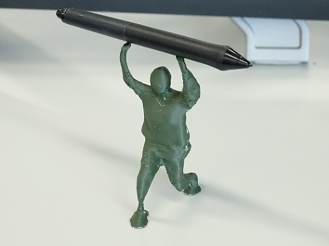
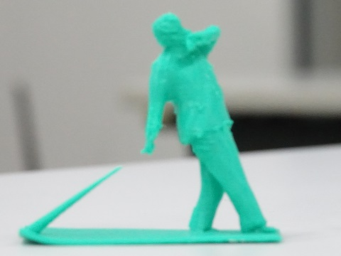
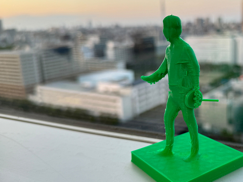
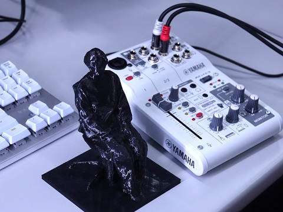
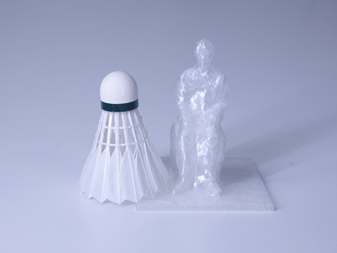

Faculty member
 |
Takashi Ijiri, Ph.D. Principal Investigator web page |
| |
Takashi Ijiri, Ph.D. Principal Investigator web page |
| Riku Inamasu, Project: VR for sports plactice |
| Karin Ohara, Project: Pointing interaction in VR |
|  | Mutsumi Aoki, Project: Visualization |
| Yasuaki Sakaguchi, Project: VR for sports training. |
| Daiki Inokoshi, Project: Fabrication. |
| Atsuro Yamamoto, Project: VR for sports training. |
|
Kodai Yasuda, Project: Photogrammetry |
|
Takuma Taki, Project: visualization using MR. |
|  |
Akito Uchiyama, Project: Smart Fitness tool. |
|  |
Hikaru Murata, Project: Training in VR. |
|
Mizuki Inoue, Project: Sports data visualization. |
|
Ryota Oki, Project: Redirection in VR. |
|
Saori Konishi, Project: music visualization. |
|
Tomoharu Kikuchi, Project: Medical Image Processing. |
|  |
Kazuki Sawamura, Project: video editing tool. |
 |
Saki Horie, Project: music practice tool. |
|
Shota Uenoyama, Project: motion reconstruction. |
|  |
Kaiya Higashino, Project: sports video processing. |
|
Kohta Fukuyo, Project: MR for training. |
|
Yuta Hanamoto, Project: redirected walking. |
|
Yamato Okabe, Project: sports data visualization. |
|
Yuji Saito, Project: tool for pixel arts. |
|
Haruya Asano, Project: Gaussian Splatting for specimens. |
|
Ayata Sudo, Project: sports video processing. |
|
Shota Hosobuchi, Project: BRDF capture. |
|
Kengo Kobayashi, Project: virtual reality. |